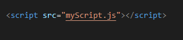

.png)

4 Ways to Declare a JavaScript Variable:
- Using var
- Using let
- Using const
- Using nothing
What are Variables?
In this example, x, y, and z, are variables, declared with the var keyword:
In this example, x, y, and z, are variables, declared with the let keyword:
In this example, x, y, and z, are undeclared variables:
In this example, x, y, and z, are undeclared variables:
- x stores the value 5
- y stores the value 6
- z stores the value 11
When to Use JavaScript var?
- Always declare JavaScript variables with var,let, or const.
- The var keyword is used in all JavaScript code from 1995 to 2015.
- The let and const keywords were added to JavaScript in 2015.
- If you want your code to run in older browsers, you must use var.
When to Use JavaScript const?
- If you want a general rule: always declare variables with const.
- If you think the value of the variable can change, use let.
- In this example, price1, price2, and total, are variables:
The two variables price1 and price2 are declared with the const keyword.
These are constant values and cannot be changed.
The variable total is declared with the let keyword.
This is a value that can be changed.
External JavaScript
External file: myScript.js

External scripts are practical when the same code is used in many different web pages.
JavaScript files have the file extension .js
To use an external script, put the name of the script file in the src (source) attribute of a < script > tag:

You can place an external script reference in < head > or < body > as you like.
The script will behave as if it was located exactly where the < script > tag is located.
External JavaScript Advantages
- It separates HTML and code
- It makes HTML and JavaScript easier to read and maintain
- Cached JavaScript files can speed up page loads